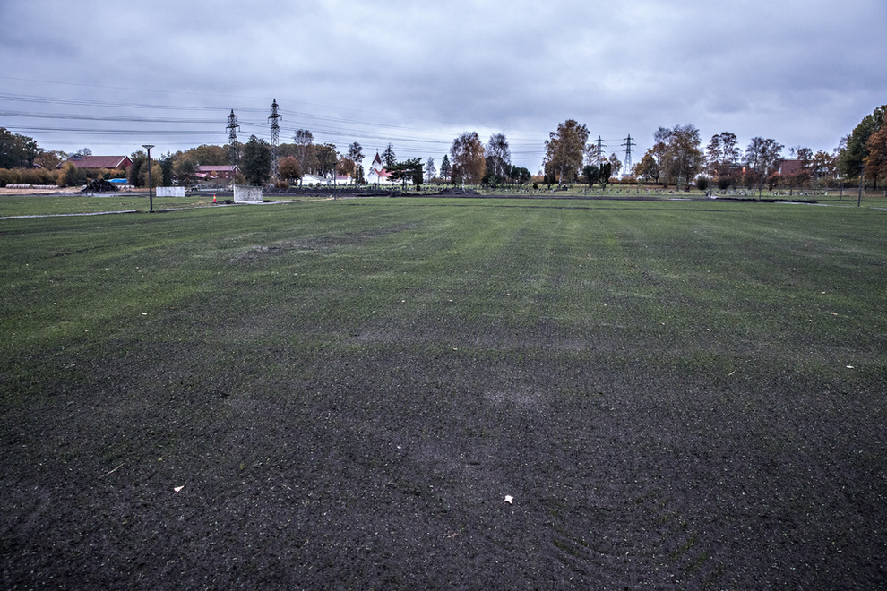

Har brukt 35 mill. på gravplasser: Nå har de 14.405 til overs  SARPSBORG Det står ikke på plassen hvis du dør i Sarpsborg kommune, som nå har en reserve på 14.405 gravplasser.
Trumps datter om farens uttalelser: – Uanstendige og fornærmende Tirsdag snakket Donald Trumps kone Melania ut om ektemannens skandaleutsagn fra 2005. Nå har også datteren Ivanka sagt sin mening.